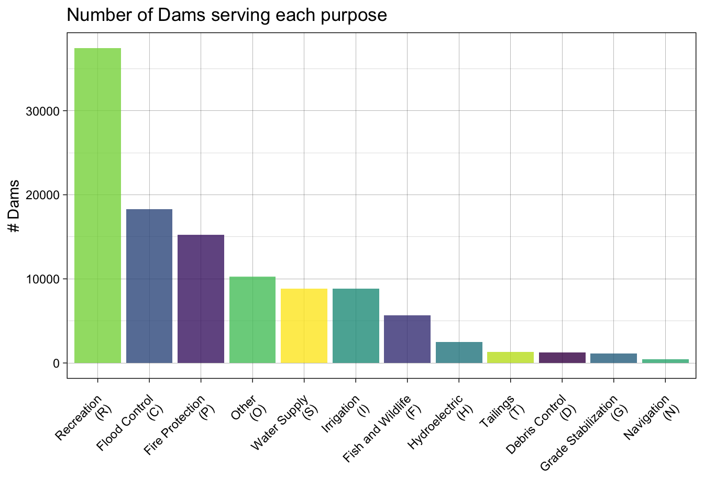

Lab 3: Tesselations, Point-in-Polygon
National Dam Inventory
Background
In this lab we will an explore the impacts of tessellated surfaces and the modifiable areal unit problem (MAUP) using the National Dam Inventory maintained by the United States Army Corps of Engineers. Doing this will require repetitive tasks that we will write as functions and careful consideration of feature aggregation/simplification, spatial joins, and data visualization. The end goal is to visualize the distribution of dams and there purposes across the country.
DISCLAIMER: This lab will be crunching a TON of data, in some cases 562,590,604 values for a single process! Therefore, I encourage you to run your code chuck-by-chunk rather then regularly knitting. Your final knit may take a couple of minutes to process. I know this is painful but be proud that, all said, your report will be analyzing billions of meaningful data and geometric relations.
This labs covers 4 main skills:
- Tesselating Surfaces to discretized space
- Geometry Simplification: to expedite expensive intersections
- Writting functions to expedite repetitious reporting and mapping tasks
- Point-in-polygon counts to aggregate point data
Libraries
Question 1:
Here we will prepare five tesselated surfaces of CONUS and write a function to plot them in a descriptive way.
Step 1.1
First, we need a spatial file of CONUS counties. For future area calculations we want these in an equal area projection (EPSG:5070).
To achieve this:
- get an
sfobject of CONUS counties (AOI::aoi_get(state = "conus", county = "all") - transform the data to
EPSG:5070
Step 1.2
For triangle based tessellations we need point locations to serve as our “anchors”.
To achieve this:
generate county centroids using
st_centroidSince, we can only tessellate over a feature we need to combine or union the resulting 3,108
POINTfeatures into a singleMULTIPOINTfeatureSince these are point objects, the difference between union/combine is mute
Step 1.3
Tessellations/Coverages describe the extent of a region with geometric shapes, called tiles, with no overlaps or gaps.
Tiles can range in size, shape, area and have different methods for being created.
Some methods generate triangular tiles across a set of defined points (e.g. voroni and delauny triangulation)
Others generate equal area tiles over a known extent (st_make_grid)
For this lab, we will create surfaces of CONUS using using 4 methods, 2 based on an extent and 2 based on point anchors:
Tessellations :
st_voroni: creates voroni tessellationst_traingulate: triangulates set of points (not constrained)
Coverages:
st_make_grid: Creates a square grid covering the geometry of an sf or sfc objectst_make_grid(square = FALSE): Create a hexagonal grid covering the geometry of an sf or sfc objectThe size of coverage tiles can be defined by a cell resolution or a specificed number of cell in the X and Y direction
For this step:
- Make a voroni tessellation over your county centroids (
MULTIPOINT) - Make a triangulated tessellation over your county centroids (
MULTIPOINT) - Make a gridded coverage with n = 70, over your counties object
- Make a hexagonal coverage with n = 70, over your counties object
In addition to creating these 4 coverages we need to add an ID to each tile within each tesselation.
To do this:
add a new column to each tessellation that spans from
1:n().Remember that ALL tessellation methods return an
sfcGEOMETRYCOLLECTION, and to add attribute information - like our ID - you will have to coerse thesfclist into ansfobject (st_sforst_as_sf)
Last, we want to ensure that our surfaces are topologically valid/simple.
To ensure this, we can pass our surfaces through
st_cast.Remember that casting an object explicitly (e.g.
st_cast(x, "POINT")) changes a geometryIf no output type is specified (e.g.
st_cast(x)) then the cast attempts to simplifiy the geometry.If you don’t do this you might get unexpected “TopologyException” errors.
Step 1.4
If you plot the above tessellations you’ll see the triangulated surfaces produce regions far beyond the boundaries of CONUS.
We need to cut these boundaries to CONUS border.
To do this, we will call on st_intersection, but will first need a geometry of CONUS to serve as our differencing feature. We can get this by unioning our existing county boundaries to dissolve the internal boundaries.
Step 1.5
With a single feature boundary, we must carefully consider the complexity of the geometry. Remember, the more points our geometry contains, the more computations needed for spatial predicates or differencing. For a task like ours, we do not need a finely resolved coastal boarder.
To achieve or more approaratie feature …
Simplify your unioned border using the Visvalingam algotithm provided by
rmapshaper::ms_simplify.Choose what percentage of vertices to retain using the
keepargument and work to find the highest number that provides a shape you are comfortable with for the analysis:
Once you are happy with your simplification, use the
mapview::nptsfunction to report the number of points in your original object, and the number of points in your simplified object.How many points were you able to remove? What are the consequences of doing this computationally?
- Finally, use your simplified object to crop the two triangulated tessellations with
st_intersection:
Step 1.6
While croping the triangulated methods makes sense, for our gridded appraoches we would rather removed those tiles that are not fully within the CONUS boundary. For this, we can use st_filter with the defualt st_intersects predicate.
- Use your simplified country object to filter the two gridded tessellations:
Step 1.7
The last step is to plot your tessellations. We don’t want to write out 5 ggplots (or mindlessly copy and paste 😄)
Instead, lets make a function that takes an sf object as arg1 and a character string as arg2 and returns a ggplot object showing arg1 titled with arg2.
The form of a function is:
Code
name = function(arg1, arg2) {
... code goes here ...
}For this function:
The name can be anything you chose, arg1 should take an
sfobject, and arg2 should take a character string that will title the plotIn your function, the code should follow our standard
ggplotpractice where your data is arg1, and your title is arg2The function should also enforce the following:
a
whitefilla
navybordera
sizeof 0.2`theme_void``
a caption that reports the number of features in arg1
- You will need to paste character stings and variables together.
Step 1.7
Use your new function to plot each of your tessellated surfaces and the original county data (5 plots in total):
Question 2:
In this question, we will write out a function to summarize our tessellated surfaces.
Step 2.1
First, we need a function that takes a sf object and a character string and returns a data.frame.
For this function:
The function name can be anything you chose, arg1 should take an
sfobject, and arg2 should take a character string describing the objectIn your function, calculate the area of
arg1; convert the units to km2; and then drop the unitsNext, create a
data.framecontaining the following:text from arg2
the number of features in arg1
the mean area of the features in arg1 (km2)
the standard deviation of the features in arg1
the total area (km2) of arg1
Return this
data.frame
Step 2.2
Use your new function to summarize each of your tessellations and the origional counties.
Step 2.3
Multiple data.frame objects can bound row-wise with bind_rows into a single data.frame
For example, if your function is called sum_tess, the following would bind your summaries of the triangulation and voroni object.
Code
tess_summary = bind_rows(
sum_tess(triangulation ,"triangulation"),
sum_tess(voroni, "voroni"))Step 2.4
Once your 5 summaries are bound (2 tessellations, 2 coverages, and the raw counties) print the data.frame as a nice table using knitr/kableExtra.
Step 2.5
Comment on the traits of each tessellation. Be specific about how these traits might impact the results of a point-in-polygon analysis in the contexts of the modifiable areal unit problem and with respect computational requirements.
Question 3:
The data we are going to analysis in this lab is from US Army Corp of Engineers National Dam Inventory (NID). This dataset documents ~91,000 dams in the United States and a variety of attribute information including design specifications, risk level, age, and purpose.
For the remainder of this lab we will analysis the distributions of these dams (Q3) and their purpose (Q4) through using a point-in-polygon analysis.
Step 3.1
In the tradition of this class - and true to data science/GIS work - you need to find, download, and manage raw data. While the raw NID data is no longer easy to get with the transition of the USACE services to ESRI Featrues Services, I staged the data in the resources directory of this class. To get it, navigate to that location and downlaod the raw file into you lab data directory.
- Return to your RStudio Project and read the data in using the
readr::read_csv`- After reading the data in, be sure to remove rows that don’t have location values (
!is.na()) - Convert the
data.frameto asfobject by defining the coordinates and CRS - Transform the data to a CONUS AEA (EPSG:5070) projection - matching your tessellation
- Filter to include only those within your CONUS boundary
- After reading the data in, be sure to remove rows that don’t have location values (
Step 3.2
Following the in-class examples develop an efficient point-in-polygon function that takes:
- points as
arg1, - polygons as
arg2, - The name of the id column as
arg3
The function should make use of spatial and non-spatial joins, sf coercion and dplyr::count. The returned object should be input sf object with a column - n - counting the number of points in each tile.
Step 3.3
Apply your point-in-polygon function to each of your five tessellated surfaces where:
- Your points are the dams
- Your polygons are the respective tessellation
- The id column is the name of the id columns you defined.
Step 3.4
Lets continue the trend of automating our repetitive tasks through function creation. This time make a new function that extends your previous plotting function.
For this function:
The name can be anything you chose, arg1 should take an
sfobject, and arg2 should take a character string that will title the plotThe function should also enforce the following:
the fill aesthetic is driven by the count column
nthe col is
NAthe fill is scaled to a continuous
viridiscolor ramptheme_voida caption that reports the number of dams in arg1 (e.g.
sum(n))- You will need to paste character stings and variables together.
Step 3.5
Apply your plotting function to each of the 5 tessellated surfaces with Point-in-Polygon counts:
Step 3.6
Comment on the influence of the tessellated surface in the visualization of point counts. How does this related to the MAUP problem. Moving forward you will only use one tessellation, which will you chose and why?
While there is not “right” answer, justify your selection here.
Question 4:
The NID provides a comprehensive data dictionary here. In it we find that dam purposes are designated by a character code.
These are shown below for convenience (built using knitr on a data.frame called nid_classifier):
| abbr | purpose |
|---|---|
| I | Irrigation |
| H | Hydroelectric |
| C | Flood Control |
| N | Navigation |
| S | Water Supply |
| R | Recreation |
| P | Fire Protection |
| F | Fish and Wildlife |
| D | Debris Control |
| T | Tailings |
| G | Grade Stabilization |
| O | Other |
In the data dictionary, we see a dam can have multiple purposes.
In these cases, the purpose codes are concatenated in order of decreasing importance. For example,
SCRwould indicate the primary purposes are Water Supply, then Flood Control, then Recreation.A standard summary indicates there are over 400 unique combinations of dam purposes:
Code
unique(dams2$PURPOSES) |> length()[1] 493- By storing dam codes as a concatenated string, there is no easy way to identify how many dams serve any one purpose… for example where are the hydro electric dams?
To overcome this data structure limitation, we can identify how many dams serve each purpose by splitting the PURPOSES values (strsplit) and tabulating the unlisted results as a data.frame. Effectively this is double/triple/quadruple counting dams bases on how many purposes they serve:
Code
# create a vector of all characters in your purpose and unlist
dam_freq <- strsplit(dams2$PURPOSES, split = "") |>
unlist() |>
table() |>
as.data.frame() |>
setNames(c("abbr", "count")) |>
left_join(nid_classifier) |>
mutate(lab = paste0(purpose, "\n(", abbr, ")"))The result of this would indicate:

Step 4.1
Your task is to create point-in-polygon counts for at least 4 of the above dam purposes:
You will use
greplto filter the complete dataset to those with your chosen purposeRemember that
greplreturns a boolean if a given pattern is matched in a stringgreplis vectorized so can be used indplyr::filter
For example:
Code
# Find flood control dams in the first 5 records:
dams2$PURPOSES[1:5][1] "FR" "R" "C" "FR" "R" Code
grepl("F", dams2$PURPOSES[1:5])[1] TRUE FALSE FALSE TRUE FALSEFor your analysis, choose at least four of the above codes, and describe why you chose them. Then for each of them, create a subset of dams that serve that purpose using dplyr::filter and grepl
Finally, use your point-in-polygon function to count each subset across your elected tessellation
Step 4.2
Now use your plotting function from Q3 to map these counts.
But! you will use
gghighlightto only color those tiles where the count (n) is greater then the (mean + 1 standard deviation) of the setSince your plotting function returns a
ggplotobject already, thegghighlightcall can be added “+” directly to the function.The result of this exploration is to highlight the areas of the country with the most dams of a given class
Step 4.3
Comment on the geographic distribution of dams you found. Does it make sense? How might the tessellation you chose impact your findings? How does the distribution of dams coiencide with other geogaphic factors such as river systems, climate, ect?
Extra Credit:
You have also been asked to identify the largest, at risk, flood control dams in the country
You must also map the Mississippi River System - This data is avialable here under the ‘Data & Resources’ tab - Download the shapefile and unzip it into your data directory. - Use read_sf to import this data and filter it to only include the Mississippi SYSTEM
To achieve this:
Create an interactive map using leaflet to show the largest (NID_STORAGE); high-hazard (HAZARD == “H”) dam in each state
- The markers should be drawn as opaque, circle markers, filled red with no border, and a radius set equal to the (NID_Storage / 1,500,000)
- The map tiles should be selected from any of the tile providers
- A popup table should be added using
leafem::popupand should only include the dam name, storage, purposes, and year completed. - The Mississippi system should be added at a Polyline feature.
Rubric:
Total: 100 points (120 points total)
Submission
You will submit a URL to your web page deployed with GitHub pages.
To do this:
- Knit your lab 4 document
- Stage/commit/push your files
- If you followed the naming conventions in the “Set Up” of lab 2, your lab 4 link will be available at:
https://USERNAME.github.io/geog-13-labs/lab-04.html
Submit this URL in the appropriate Gauchospace dropbox. Also take a moment to update your personal webpage with this link and some bullet points of what you learned. While not graded as part of this lab, it will be your final!